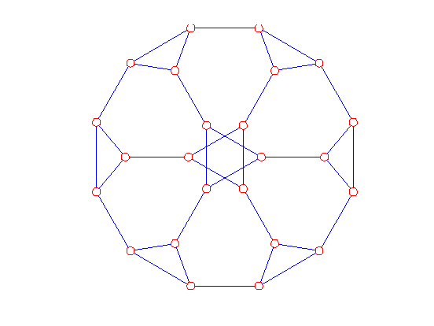
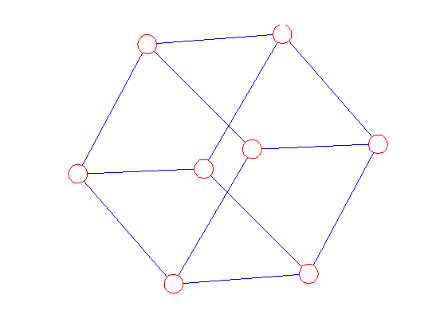

Creating a Cayley graph
Contents
Specifying the group by its generators
We specify a finite group by giving a list of its generators. The generators are a cell array of permutations of a common ground set.
In this example, we create a graph using two generators from the permutations of the set {1,2,3,4,5,6}.
p1 = permutation([1,3,6,4,5,2])
p2 = permutation([6,3,2,5,4,1])
perms = {p1,p2};
(1)(2,3,6)(4)(5) (1,6)(2,3)(4,5)
Create the graph
g = graph; cayley(g,perms);
Draw the graph
distxy(g); clf; draw(g);
Optimization terminated: relative function value changing by less than OPTIONS.TolFun. Embedding score = 41.4477 Elapsed time is 1.397237 seconds.
Another example
p1 = permutation([2 3 4 1])
p2 = swap(1,2)
cayley(g,{p1,p2},true) % verbose output
distxy(g);
clf;
draw(g);
(1,2,3,4) (1,2) Generating the group elements from these: (1,2,3,4) (1,2)(3)(4) Expanding. Group size = 3 Expanding. Group size = 6 Expanding. Group size = 11 Expanding. Group size = 16 Expanding. Group size = 21 Expanding. Group size = 24 Generating edge list 48 edges created Optimization terminated: relative function value changing by less than OPTIONS.TolFun. Embedding score = 50.6385 Elapsed time is 1.192996 seconds.

Showing the labels on vertices
The vertices of a Cayley graph are labeled by the group elements (permutations) they represent.
p1 = permutation([3 2 4 1]);
p2 = swap(1,2)*swap(3,4)
cayley(g,{p1,p2})
distxy(g);
clf;
ldraw(g)
(1,2)(3,4) Optimization terminated: relative function value changing by less than OPTIONS.TolFun. Embedding score = 8.4932 Elapsed time is 0.181026 seconds.

The cube as a Cayley graph
p1 = permutation([2 1 3 4 5 6])
p2 = permutation([1 2 4 3 5 6])
p3 = permutation([1 2 3 4 6 5])
perms = {p1,p2,p3};
cayley(g,perms);
distxy(g);
clf;draw(g)
(1,2)(3)(4)(5)(6) (1)(2)(3,4)(5)(6) (1)(2)(3)(4)(5,6) Optimization terminated: relative function value changing by less than OPTIONS.TolFun. Embedding score = 4.7576 Elapsed time is 0.221048 seconds.
Free storage
free(g);